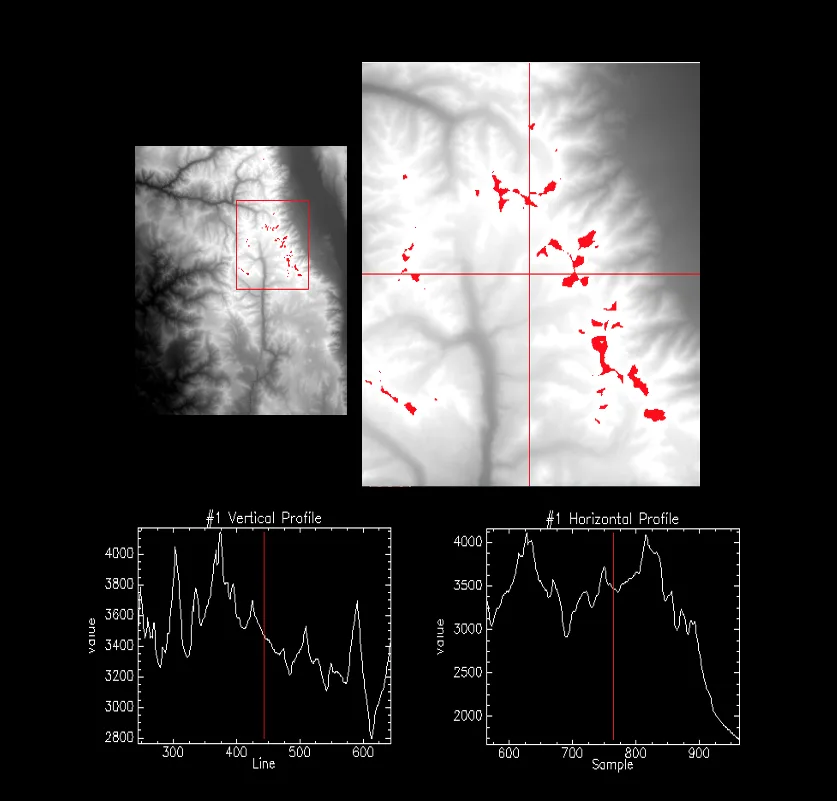
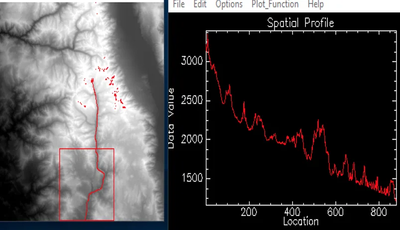
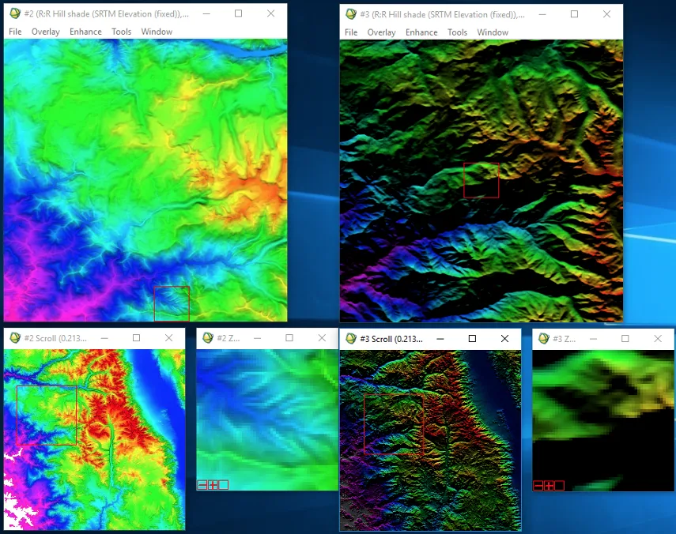

UCLA coursework, 2014 to 2018
Analysis of Topographic Data: DEM of Mt. Whitney, CA using SRTM Imagery
This project unveils the prevalence in using 3D representations of the Earth's surface: Digital Elevation Models (DEMs). Elevation data for MT. Whitney, CA was obtained through the Shuttle Radar Topography Mission (SRTM) - a mission that garnered a near-global scale, high-resolution digital topographic database of Earth. SRTM consisted of a specially modified radar system (C-Band and X-Band) that flew onboard the Space Shuttle Endeavor during an 11-day mission in February of 2000. As a result of this effort, three resolutions were produced: 30 arc second (1km), 3 arc second (90km), and 1 arc second (10m).
Preparing the Image:
The images produced below showcase DEM's prevalence for 2 types of modeling: Elevation and Hydrological. These are seen through the creation of Elevation Profiles for MT. Whitney - the highest summit in the contiguous U.S. - and a Transect Profile for the largest river in its vicinity (Kern River).
At the center of the DEM is the Kern River (N-S direction), with Owen's Valley on the far right and MT. Whitney in-between the two. To highlight the highest elevations in the MT. Whitney area, a density slice was performed and overlayed on the original image. The default classification for the density slice was used; however, the ranges were customized to parallel the elevation of MT. Whitney. The range's starting point was set to 4,000, and its ending point was set to MT. Whitney's maximum elevation point.
Elevation and Vertical Profiles were created to better understand the topography of MT. Whitney. An Elevation Transect was produced to get a closer look at the flow of water in the Kern River. A Hillshade Model was created to accentuate the elevation of MT. Whitney and grasp the sun's impact on remotely sensed images.
Analyzing Horizontal & Vertical Profiles - Mt. Whitney, CA

The horizontal and vertical profiles in the graphs above are particular to MT. Whitney's topographical layout. They showcase the oscillations in elevation throughout a continuous distance, sharing the same topography. An analysis between the two profiles uncovers the relationship between elevation and distance. The horizontal profile indicates a decrease in elevation the further the distance from MT. Whitney's peak. The vertical profile proves its counterpart - an increase in elevation the closer to MT. Whitney's peak.
Elevation Transect - Kern River

The image extracted from SRTM is helpful in analyzing the elevation transect of the Kern River, because DEMs allow for easy extraction of drainage networks (hydrological modeling). Graphing the spatial profile of Kern River allows for a palpable representation of the water's flow - Southward.
Considerations for Sun Positioning - Application of Colored Hill Shade

Hill Shade models are created for consideration of possible topographic changes due to the sun's positioning. The sun elevation angle is how high the sun is positioned in the sky. The sun azimuth angle describes which direction the sun is coming from - with North as 0° increasing clockwise to 360°. These two contrasting images of the same hill shade model illustrate the necessity in understanding the sun's impact on DEMs.
The hill shade model on the left represents an elevation angle set to 90° and an azimuth angle set to 360°. With these parameters, the sun's setting is essentially on the horizon (the northern region). This is a plausible scenario for projecting the sun's impact on a remotely sensed image, given the sun's placement within a 90° incremental oscillation.
The hill shade model on the right represents an elevation angle set to 10° and an azimuth angle set to 0°. These unrealistic parameters were set to emphasize the importance in comprehending practical scenarios for the sun's positioning. The image on the right is dark in color - no sun in sight. This makes sense, because the sun doesn't set in the North.